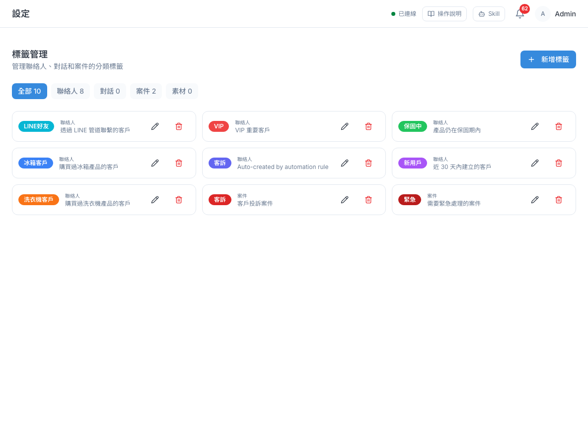
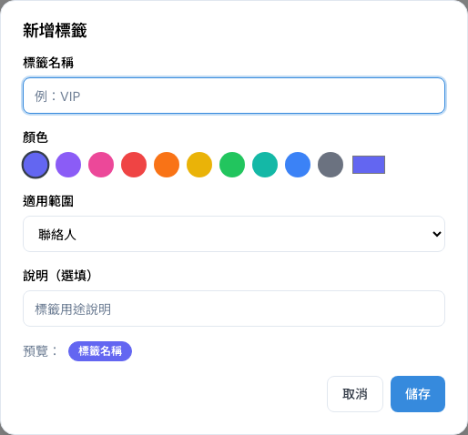
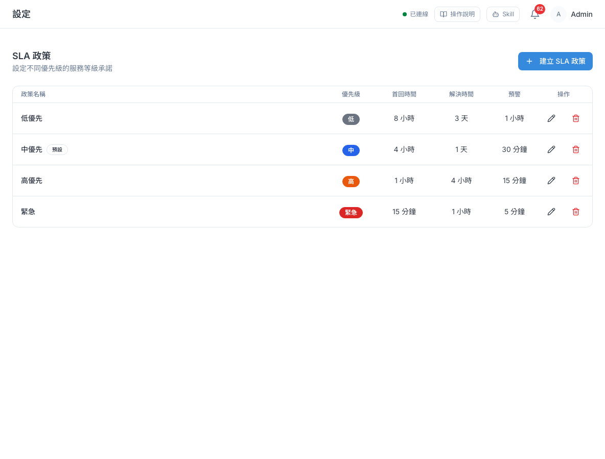
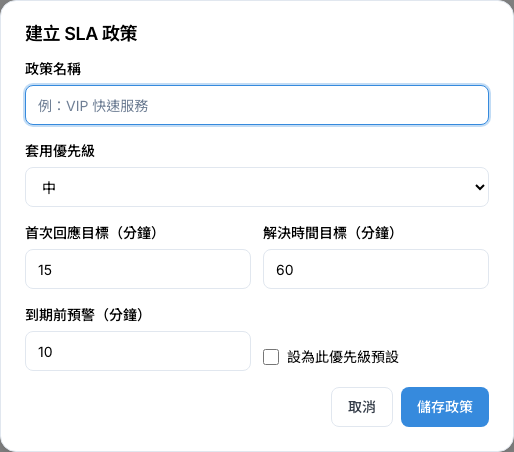
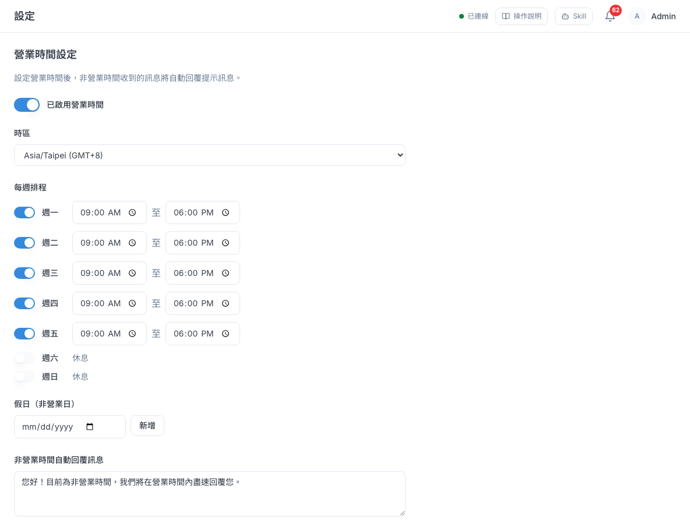
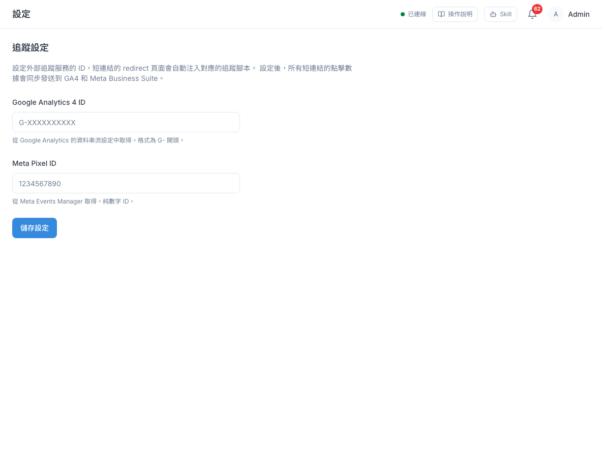
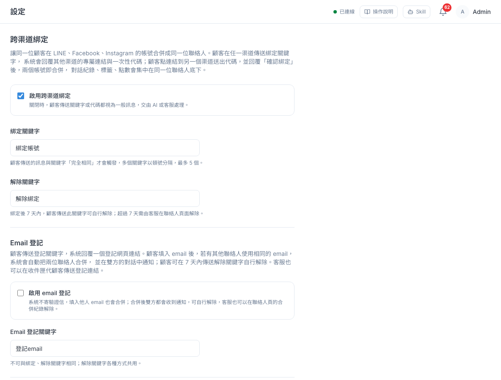
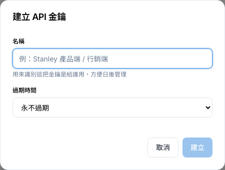
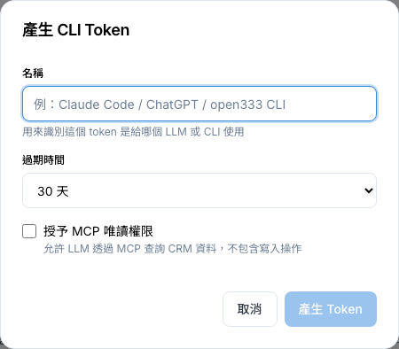

其他設定
標籤、回覆時限、營業時間、廣告追蹤、把同一位客人在不同渠道的帳號認成同一人，以及給技術人員用的金鑰與連線設定。
1 這頁能做什麼
這一章的功能都在左側選單「分析與管理 → 設定」底下，每個子頁一節。除了「標籤管理」大家都能用之外，其他頁預設只有管理員和主管能修改。沒有權限的人可能還是看得到選單，但打開會是空白，按儲存會失敗。
2 標籤管理
標籤是貼在客人、對話、工單或素材上的分類小貼紙，例如「VIP」「客訴」「冰箱客戶」。在這裡統一建立，大家貼的時候就會用同一套名稱。

新增標籤
- 到「設定 → 標籤管理」，按右上「新增標籤」。
- 填「標籤名稱」，最多 50 字。
- 在「顏色」點一個顏色，或點最右邊的色塊自選顏色。
- 在「適用範圍」選這個標籤要貼在哪裡：聯絡人、對話、案件或素材。建立後就不能改範圍。
- 需要的話填「說明（選填）」，讓同事知道什麼時候該貼。
- 看一下下方「預覽」，按「儲存」。

| 適用範圍 | 貼在哪裡 |
|---|---|
| 聯絡人 | 客人身上，例如「VIP」「保固中」。行銷分群常用 |
| 對話 | 某一段對話，例如「詢價」 |
| 案件 | 工單，例如「客訴」「緊急」 |
| 素材 | 素材庫裡的圖文素材，方便分類查找 |
- 同一個範圍裡不能有兩個同名標籤；不同範圍可以同名（例如聯絡人和案件都有「客訴」）。
- 編輯：按卡片右邊的鉛筆，可以改名稱、顏色、說明。素材標籤改名後，所有素材上的標籤也會一起改。
3 SLA 政策
SLA 是「服務承諾時限」：答應客人多久內一定回覆、多久內把問題處理完。你可以依工單的優先級（緊急／高／中／低）設不同的時限，系統會在工單上倒數，快到期時提醒負責人。
首次回應時間、解決時間和工單倒數的關係
| 設定 | 意思 | 在工單上會看到 |
|---|---|---|
| 首次回應目標 | 工單建立後，多久內要回客人第一句話 | 工單詳情的 SLA 區塊顯示「首次回應：已達／未達／待回應」 |
| 解決時間目標 | 工單建立後，多久內要處理完 | 工單詳情的倒數計時，以及列表的 SLA 欄；超過就算「SLA 違規」 |
| 到期前預警 | 到期前多久先提醒 | 時間一到，系統通知工單負責人；真的逾時再通知主管 |
舉例：「高」優先的政策設首次回應 60 分鐘、解決 240 分鐘、預警 15 分鐘。上午 10:00 建立一張高優先工單，10:45 系統提醒負責人要回覆，14:00 前要處理完。

建立 SLA 政策
- 到「設定 → SLA 政策」，按右上「建立 SLA 政策」。
- 填「政策名稱」，例如「高優先」。
- 在「套用優先級」選這個政策要套用到哪個優先級的工單。
- 填「首次回應目標（分鐘）」「解決時間目標（分鐘）」「到期前預警（分鐘）」，都以分鐘為單位，例如 1 天就填 1440。
- 按「儲存政策」。

同一個優先級有好幾個政策時
同一個優先級可以建好幾個政策，例如一般的「高優先」和給 VIP 的「高優先（VIP）」。新工單自動套用時，系統會先用勾了「設為此優先級預設」的那個；都沒勾的話，用最早建立的那個。需要特殊時限的工單，建立時在「SLA 政策」欄直接選那個政策就好。
改名與刪除
- 政策名稱不能重複。儲存時如果跟別的政策撞名，對話框會告訴你，請換一個名稱。
- 可以放心改名：已經套用這個政策的工單會一起換成新名稱，預警和逾時判斷照常進行。
- 還有未結案的工單在用這個政策時，不能刪除。系統會告訴你還有幾張工單在用，請等那些工單結案後再刪，或改用「編輯」調整時限。
修改分鐘數只影響之後新建立的工單的解決期限；已經建立的工單，解決期限不會跟著改。
4 營業時間
設定公司的上班時間後，客人在下班時間或假日傳訊息，系統會自動回一段話，讓客人知道你們會晚點回覆。
- 到「設定 → 營業時間」，點開關讓它顯示「已啟用營業時間」。關閉時系統一律當作營業中，不會自動回覆。
- 在「時區」選你們公司所在的時區（台灣選 Asia/Taipei）。
- 在「每週排程」逐天設定：有上班的日子打開開關，填上下班時間；休息的日子關掉，會顯示「休息」。
- 國定假日、店休日：在「假日（非營業日）」選日期，按「新增」。日期旁的 × 可以移除。
- 在「非營業時間自動回覆訊息」寫下要回給客人的話。
- 按最下方「儲存設定」。

- 同一位客人 30 分鐘內只會收到一次自動回覆，不會每傳一句就回一次。
- 自動回覆訊息清空後儲存，系統會改用預設文字「您好！目前為非營業時間，我們將在營業時間內盡速回覆您。」
- 如果某個渠道在「渠道管理 → Bot 設定」填了「非營業時間問候語」，那個渠道會改用 Bot 設定的內容，這裡的訊息不會送出。改了這裡卻沒效果時，請先檢查 Bot 設定（見「15 · 渠道管理」）。
- 營業時間只影響這個自動回覆，不會暫停 SLA 倒數，也不影響工單派送。
5 追蹤設定
如果你們有用 Google Analytics 4 或 Meta（Facebook）廣告像素，在這裡填入 ID，客人點短連結時的資料就會同步送到 GA4 和 Meta，方便你在廣告後台看成效。短連結的用法見「12 · 短連結」。

- 到「設定 → 追蹤設定」。
- 在「Google Analytics 4 ID」貼上 GA4 的評估 ID（在 GA 的資料串流設定裡，G- 開頭加大寫英文字母或數字，例如 G-ABC123XYZ9）。
- 在「Meta Pixel ID」貼上像素 ID（在 Meta 事件管理工具裡，5～20 位純數字）。
- 按「儲存設定」，旁邊出現「已儲存」即完成。不想再追蹤時，清空欄位再儲存。
- 儲存時系統會檢查格式。格式不對時會跳出提醒，告訴你是哪一個 ID 填錯，原本的設定不會被改掉。前後多打的空白會自動去掉。
- 如果頁面顯示「無法讀取追蹤設定」，代表這次沒讀到原本的 ID，這時不會出現表單，也就不會誤把 ID 清掉。請按「重新載入」再試一次。
6 跨渠道綁定
同一位客人可能先用 LINE 問問題，過幾天又從 Facebook 私訊你。系統一開始會把他當成兩位不同的聯絡人。開啟跨渠道綁定後，客人可以自己完成「認領」，兩個帳號就會合併成同一位聯絡人，對話紀錄、標籤、點數都集中在一起。
從客人的角度看：三種認人方式
以「王小姐先加了你的 LINE，後來又到 FB 粉專私訊」為例：
| 方式 | 王小姐要做什麼 | 結果 |
|---|---|---|
| 綁定代碼 | 在 LINE 傳「綁定帳號」，收到一組代碼和 FB 粉專的連結；點連結到 FB 私訊送出代碼，再回覆「確認綁定」 | LINE 和 FB 的王小姐合併成同一位聯絡人 |
| Email 登記 | 在 LINE 傳「登記email」，點系統回的網頁填自己的 email；之後在 FB 也做一次，填同一個 email | email 相同的兩位聯絡人自動合併 |
| 手機登記 | 同上，改傳「登記手機」並填手機號碼（只接受台灣手機） | 手機號碼相同的聯絡人自動合併，0912-345-678、+886 912 345 678 這類寫法都會被認成同一支 |
合併後雙方的對話裡都會收到通知。合併後 7 天內，客人傳「解除綁定」可以自己取消；超過 7 天，由客服在聯絡人頁的「合併紀錄」解除（見「03 · 聯絡人」）。客服也可以在收件匣按「傳送跨渠道綁定連結」或「傳送 email 登記連結」「傳送手機登記連結」，代客人發出（見「01 · 收件匣」）。

設定步驟
- 到「設定 → 跨渠道綁定」。這頁只有管理員和主管看得到。
- 先看最下方「啟用前請確認」清單，確認各渠道都準備好了（見下方提醒）。
- 要用綁定代碼：勾選「啟用跨渠道綁定」，確認「綁定關鍵字」和「解除關鍵字」。
- 要用 email 自動歸戶：勾選「啟用 email 登記」，確認「Email 登記關鍵字」。
- 要用手機自動歸戶：勾選「啟用手機登記」，確認「手機登記關鍵字」。
- 按「儲存設定」，出現「已儲存」後約 15 秒內生效。
- 關鍵字要客人傳的訊息「完全一樣」才會觸發（英文不分大小寫）。可以設多個，用頓號或逗號分隔，最多 5 個，每個最多 20 字。
- 各方式的關鍵字不能重複，也不能用「確認綁定」當關鍵字。解除關鍵字三種方式共用。
- 代碼和登記連結 30 分鐘內有效。
- 同一個渠道的兩個帳號（例如同一個 LINE 官方帳號的兩個 LINE 帳號）不能合併，客人會收到無法合併的回覆。
- 各渠道已在「渠道管理」設定導流識別（LINE Basic ID、粉專 username、IG 帳號），沒設定的渠道不會出現在給客人的連結裡（見「15 · 渠道管理」）。
- Facebook 粉專要設定「開始使用」按鈕，第一次私訊的客人才收得到代碼。
- Instagram 的綁定連結只能在手機 App 上用。
- 同一品牌的多個 LINE 官方帳號要建在同一個 Provider 底下，否則系統認不出是同一人。
7 API 金鑰
這頁給需要串接合作廠商的管理員使用。頁面標題是「Partner API 金鑰」，產生的金鑰只有一個用途：讓合作廠商的系統把文件自動推送到你們的知識庫（知識庫見「06 · 知識庫」）。一般客服不需要碰這頁。

- 到「設定 → API 金鑰」，按「建立金鑰」。
- 「名稱」寫這把金鑰是給誰用的，例如「某某廠商」；「過期時間」可選永不過期、30 天、90 天、180 天或 1 年。
- 按「建立」後，完整金鑰只會顯示這一次。按「複製」，用安全的方式交給合作廠商，再按「我已保存，關閉」。
- 不再合作或金鑰外流時，按那一列的垃圾桶圖示「撤銷」，立刻失效、無法復原。撤銷的金鑰仍會留在列表，狀態顯示「已撤銷」。
- 沒有「重新產生」功能，要換金鑰就先撤銷，再建一把新的。
- 列表的「狀態」目前只看有沒有撤銷，已過期的金鑰仍會顯示「啟用中」，請一併看「過期時間」欄。
8 CLI 連線
這頁給會用 AI 助理或指令列工具的技術人員使用。頁面標題是「CLI / LLM 連線」，在這裡產生的 Token 可以讓 Claude、ChatGPT 這類 AI 工具用你的身分查詢系統資料（預設只能讀、不能改）。一般客服不需要碰這頁。

- 到「設定 → CLI 連線」，按「產生 Token」。
- 「名稱」寫用途，例如「Claude Code」；選「過期時間」；如果 AI 工具要透過 MCP 查資料，勾選「授予 MCP 唯讀權限」。
- 按「產生 Token」，完整 Token 只會顯示這一次，按「複製」保存好，再按「我已保存，關閉」。
- 「過期時間」可選 7 天、30 天、90 天或 1 年，預設 30 天。每個 Token 都有到期日，到期前請記得重新產生。
- 這裡產生的 Token 是給 AI 工具用的。open333 指令列工具不需要它：在電腦上執行
open333 login，用你的 Email 和密碼登入，工具會自己產生並保存一個 Token，那個 Token 也會出現在這個列表。 - 這個列表會列出公司所有人的 Token，包含別人用 open333 指令登入時自動產生的。撤銷前請確認是誰在用，撤銷後對方的工具會立刻斷線。
- 已過期的 Token 仍會留在列表上，不會特別標示，請看「過期時間」欄判斷。
9 A2A
位置在「設定 → 整合 → A2A」，只有管理員和主管看得到。這頁顯示系統和外部 AI 代理之間的連線資訊，全部是唯讀，由系統維運人員在伺服器上設定，你不需要也無法在這裡修改。如果有人請你確認 A2A 狀態，看「目前狀態」那一欄就可以。